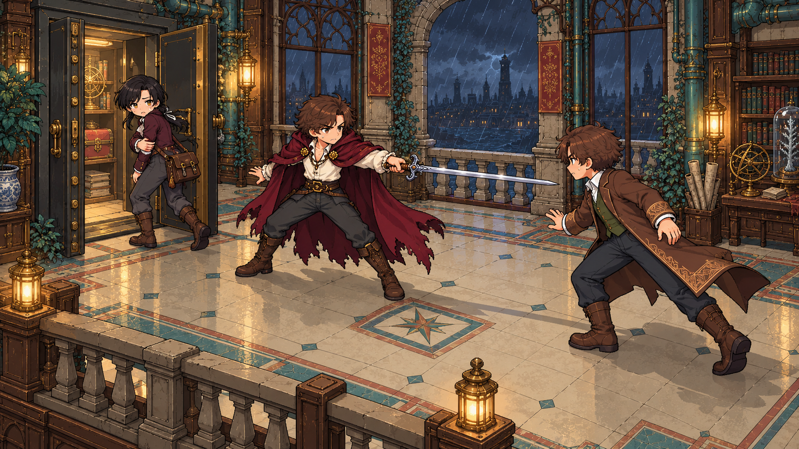
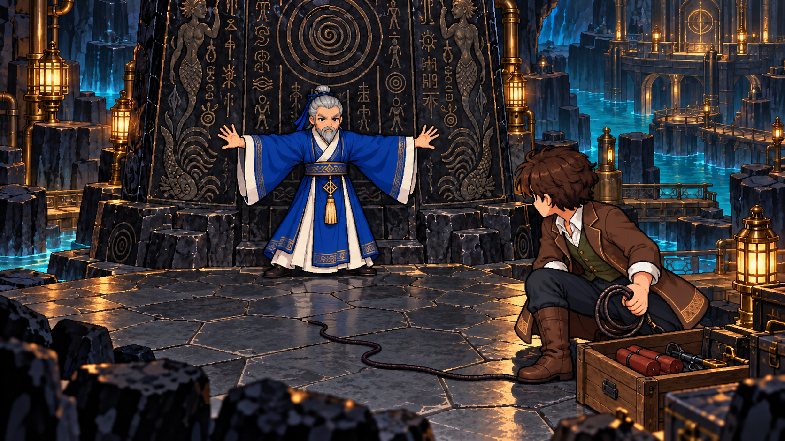
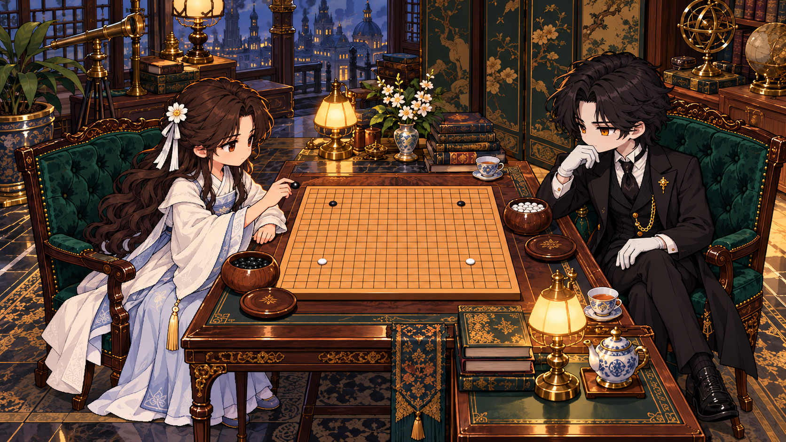
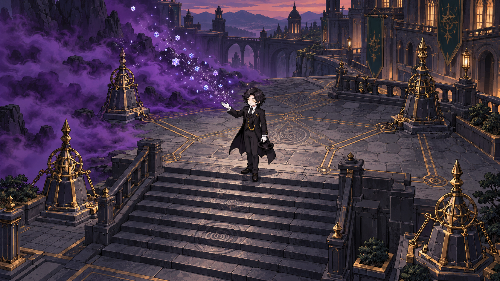
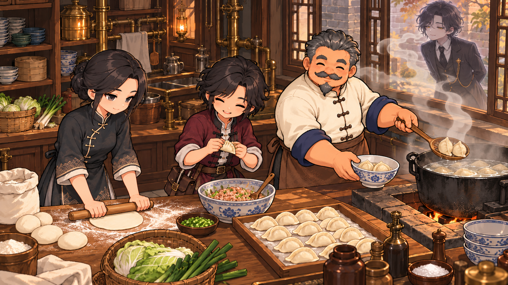
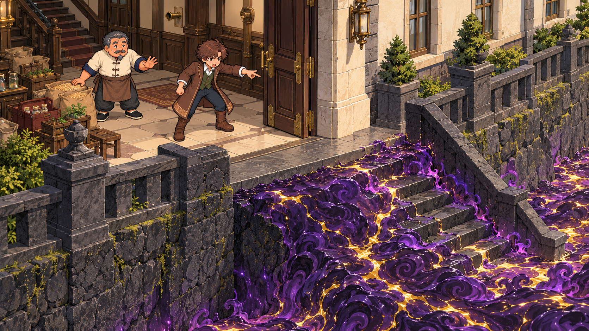

场景设计 / 构图目标 · 2026-10-25六幕，六个可读的行动
依据主代理核对的设计摘录，以完整场景表现人物目标、手与物件接触、阻拦或交接及可见结果。六幕生产演出接线保持暂停；这些图片尚未作为游戏运行效果验收。
图像实际为1672×941，保留ImageGen原始像素；请求目标为2048×1152，未通过拉伸补足。原稿、参考、提示词与修订依据见来源清单。
01 · 横剑护送
左门扶臂撤离 → 中央诗人横剑截住右前追击者。

保留首版完整构图。02 · 以身护碑
古碑完整、引线未燃；学者双臂挡在碑与爆破器材之间。

前景持引线者由错误红斗篷修正为侦探棕外套、橄榄马甲。03 · 与神明对弈
阮清月执黑准备第五手；唯一代管者实体执白对弈。

缩短人物比例，盘面改为仅四个已落子（黑二白二）与手中第五黑子。 棋盘精确十九路和星位尚不作逐线验收结论。04 · 雾散露阶
一位代管者脱帽抬手，四锚围合；残雾转星尘，石阶露出。

保留首版完整构图。05 · 一起包饺子
擀皮、双手捏边、入锅、捞入碗；窗外虚影只闻香。

雀儿手势由撒馅改为双手捏合半折面皮。06 · 最后的转运
侦探与沈鼎在一楼大门内发现源质已攀近门槛；门内地坪与门外平台同高，厚玄武岩地基和下行台阶交代危险迫近。

按用户直接纠正完全换构图：两人同在一楼门内，危险逼近门外顶部平台与门槛；厚玄武岩抬高基座和下行阶梯可见。取消跨层吊运主体，物资与室内上行楼梯仅作背景。图像可用于讨论构图与行动，不能替代分层资源制作、碰撞/镜头接线或实机观察。